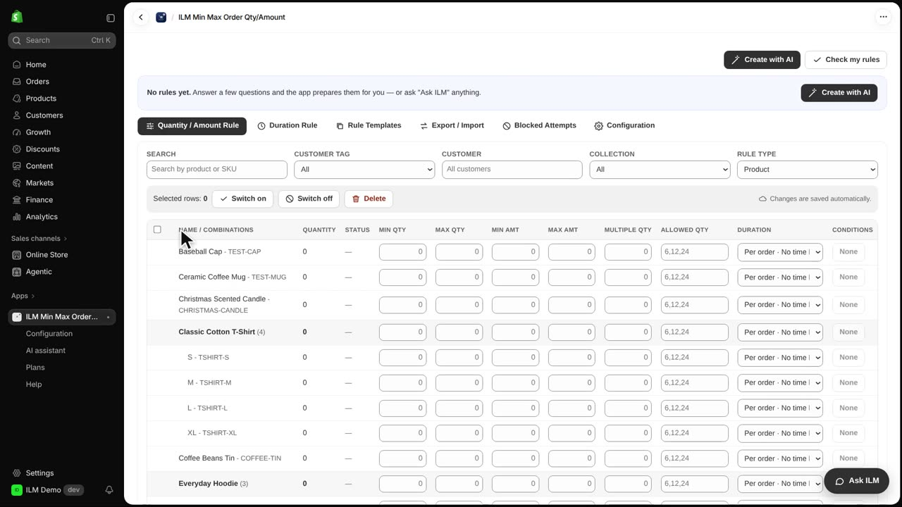
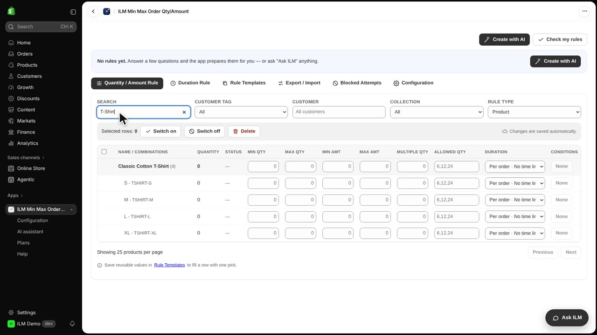
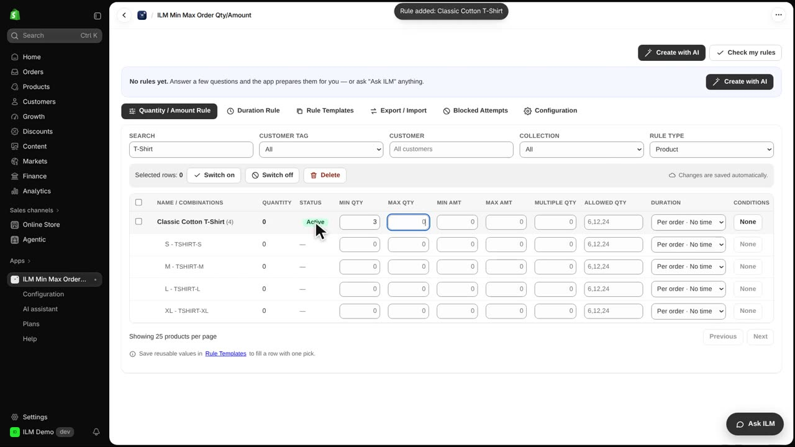
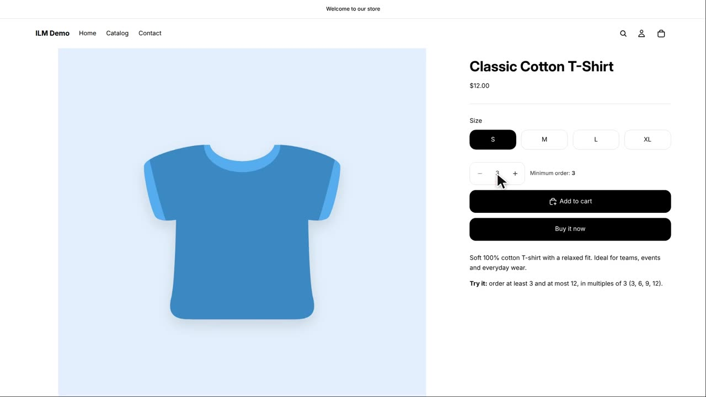
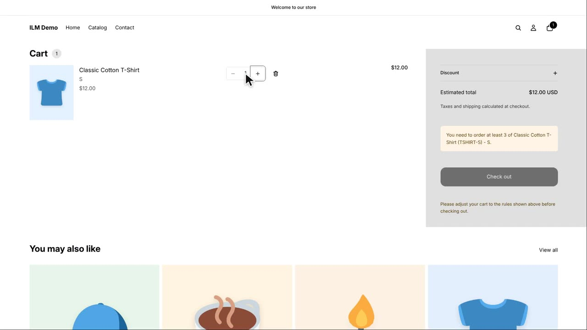
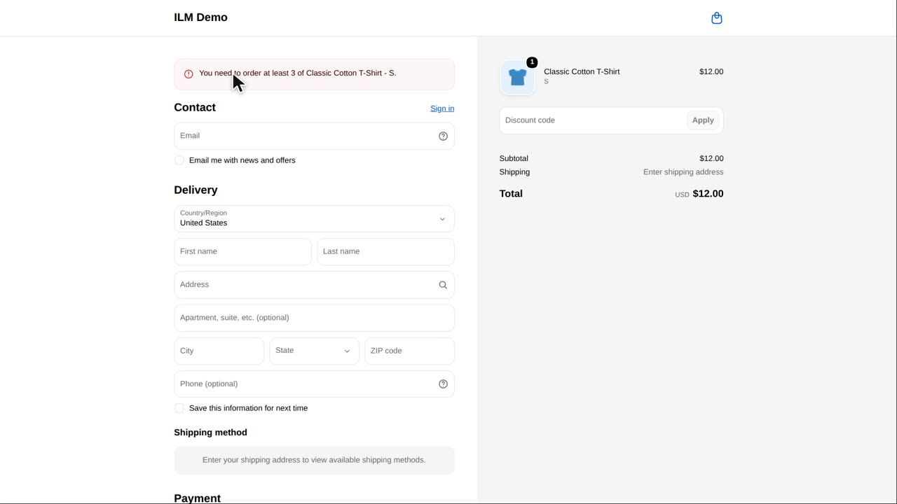
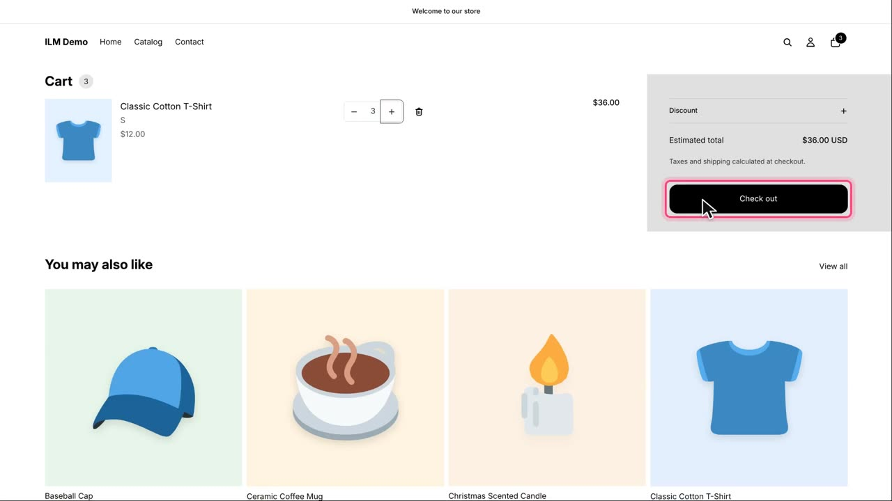

In this lesson you set a minimum quantity, so a product can only be ordered from a certain number of items. Our example is the Classic Cotton T-Shirt, which must be bought at least three at a time. This is perfect for shops that sell in packs, or want to protect small margins on low-cost items. Let's see how it works in the ILM Demo store.
Open the app. The Quantity / Amount Rule tab lists every product of your store, one row each. There are no rules yet, so every product can be ordered in any quantity.

Find the product with the search box. We type T-shirt to narrow the list down to the Classic Cotton T-Shirt.

Click the Min Qty field of the Classic Cotton T-Shirt row and type three. When you leave the field, the rule is saved, and its status becomes Active.

Now the shop. The product page tells the shopper the minimum, and the quantity box already starts at three. The shopper immediately understands they need to buy at least three.

The shopper adds three to the cart. Then, in the cart, the shopper lowers the quantity to one, trying to get around the rule.

The cart explains what to change, and the Checkout button is locked. The shopper cannot proceed until the quantity meets the minimum.
Even a direct link to checkout does not help: Shopify checkout checks the rule again and refuses the order. This double check means the rule cannot be bypassed.

Back in the cart, the shopper sets three again. The message is gone, and the shopper can check out.
